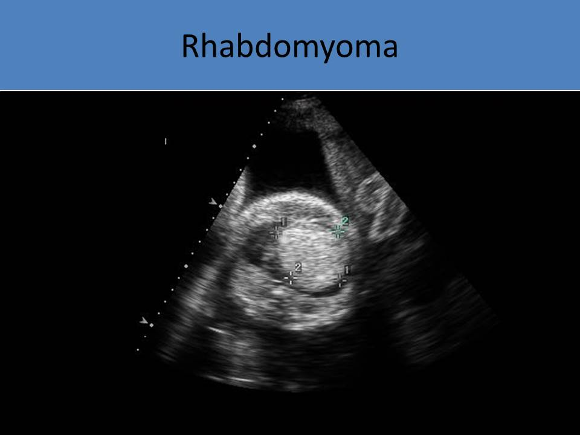

.jpg)
Cardiac Masses
General Information:
- Very rare in children
- Rhabdomyomas (55%, most common), teratomas(25%), fibromas (10%), hemangiomas, myxomas, lymphomas, neurofibroma
- Easily diagnosed by echocardiography
- All cardiac masses have the potential to cause arrhythmia due to disruption of the conduction system as the tumor grows

- Cardiac mass can be detected by prenatal screening
- Irregular rhythm can be observed
- Pericardial effusion is common with intrapericardial tumors
- Tumor can obstruct blood flow to the heart through extrinsic compression or internal obstruction
- Tumor can cause hypoplasia of the compressed vessels or chamber and valvar regurgitation (interfere with valves)
- Fetal hydrops may develop
- If obstruction due to cardiac tumor occurs and is untreated, mortality rate is high
Rhabdomyomas:
- Most common homogeneous tumor in fetuses, children
- Diagnosed as early as 18-20 weeks
- Overgrowth of heart muscle
- Can occur in ventricular walls, valves, atria, subepicardial region
- Most commonly found in the ventricles and interventricular septum
- If the tumors form within the myocardium, arrhythmia is common due to disruption in the conduction system
- The most commonly associated arrhythmia is supraventricular tachycardia
- If SVT develops, fetal hydrops and polyhydramnios can occur
- If the tumors form within the ventricular chambers, valvular obstruction can occur
- Associated with family history of tuberous sclerosis
- Tuberous sclerosis is a rare multi-system genetic disease that causes non-malignant tumors called rhabdomyomas to grow in the brain and on other vital organs such as the kidneys, heart, eyes, lungs, and skin
- 90% of cases have multiple tumors
- Can obstruct inflow or outflow or ventricles and cause redirection of the foramen ovale flow
- Increases in size as pregnancy progresses
- High rate of death in utero
- Tend to regress spontaneously in early childhood
- Hyperechoic, homogeneous appearance on fetal echo

33 weeks fetus with multiple rhabdomyomas due to maternal tuberous sclerosis
Neonatal echo-multiple rhabdomyomas, several tumors located in the ventricular septum and one located in the LVOT, obstructing outflow tract
Teratoma:
- Second most common fetal cardiac tumor
- Single encapsulated tumor that attaches to the base of the heart
- Heterogenous tumor with cystic components and calcification
- Intrapericardial occurrence is most common
- Attached to the heart by a stalk
- Most common location is at the root of the aorta or pulmonary artery and the right heart chambers
- Hyperechoic with multiple cystic areas and calcifications - this characteristic can differentiate teratomas from other tumors
- Most distinguishing feature is tumor size; often causes severe cardiac rotation, impingement of right atrium and obstruction
- Can compress chambers causing hemodynamic compromise
- Commonly cause pericardial effusion
Pediatric echo-2-year-old admitted to ER for severe shortness of the breath. There is a large teratoma, consisting with cystic structures and next to the right atrium, obstructing right atrium inflow and causing cardiac tamponade
35 weeks fetus with large teratoma, starting from the pericardium close to the right atrium. There is large pericardial effusion, ascites, and pleural effusion
35 weeks fetus with large teratoma: originating from the pericardium, close to the right atrium; there is large pericardial effusion, ascites, and pleural effusion
Fibroma:
- AKA fibromatosis, fibrous hamartoma, congenital mesoblastic tumor
- Third most common tumor in the fetus ( second most common in children)
- Single nonencapsulated intramural tumor
- Usually a large tumor
- Composed of fibroblasts/collagen fibers
- Most commonly located in the left ventricular free wall or septum
- Myxomatoid and trabeculated appearance
- Hyperechoic or isoechoic to myocardium
- Tend to invade the myocardium as they grow
- Can cause inflow/outflow obstruction/ arrhythmias
- Associated with Gorlin syndrome (body overgrowth, skeletal abnormality, benign and malignant neoplasms)
- Associated with cleft lip and palate
- Causes CHF and cyanosis in neonates
31 weeks’ gestation fetus with fibroma in the left ventricle
Hemangioma:
- Rare
- Benign tumor composed of vascular tissues
- Can cause rhythm disturbances, pericardial effusion and tamponade
- Can be diagnosed by identifying the main feeding vessel of the tumor using color Doppler
- Mixed echogenicity
Myxoma:
- Most common cardiac tumor in adults, rarely seen in neonates
- Most commonly forms in the left atrium
- Usually a single tumor
- Large tumor moves in and out of the atrium through the atrioventricular valve
- Causes hemodynamic compromise
- Hyperechoic mass with calcifications
Neonatal echo on a 4 year old pediatric patient with cardiac arrest: there is a large myxoma is located in the right atrium
Congenital Ventricular Diverticulum:
- Focal weakening of the ventricular wall caused by insult in early pregnancy
- Narrow connection to ventricular cavity
- Most commonly affects the right ventricle
- Composed of normal layers of ventricular cavity
- Contracts with ventricular systole
- Apical CVDs are associated with other defects, non-apical defects are isolated findings
- Apical CVD is associated with Pentalogy of Cantrell
- Focal weakening of the ventricular wall caused by insult in early pregnancy
- Wide connection to ventricular cavity
- Composed of thinned/disrupted myocardium
- Does not contract with ventricular systole
- Usually isolated finding
- Redundant eustachian valve
- Echogenic Intracardiac Foci (EIF) - not considered a mass, normal variant seen in normal pregnancies and should not be used as an indication for fetal echo, considered a soft marker for trisomy 21